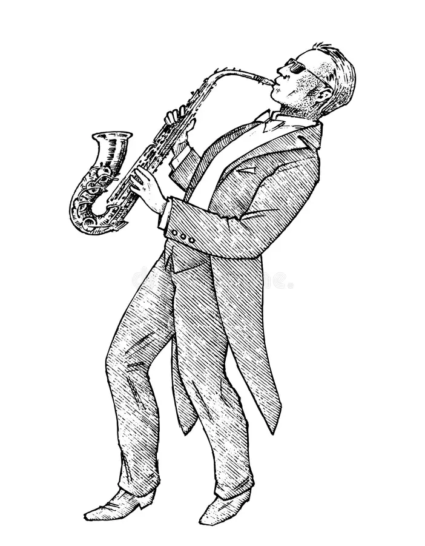
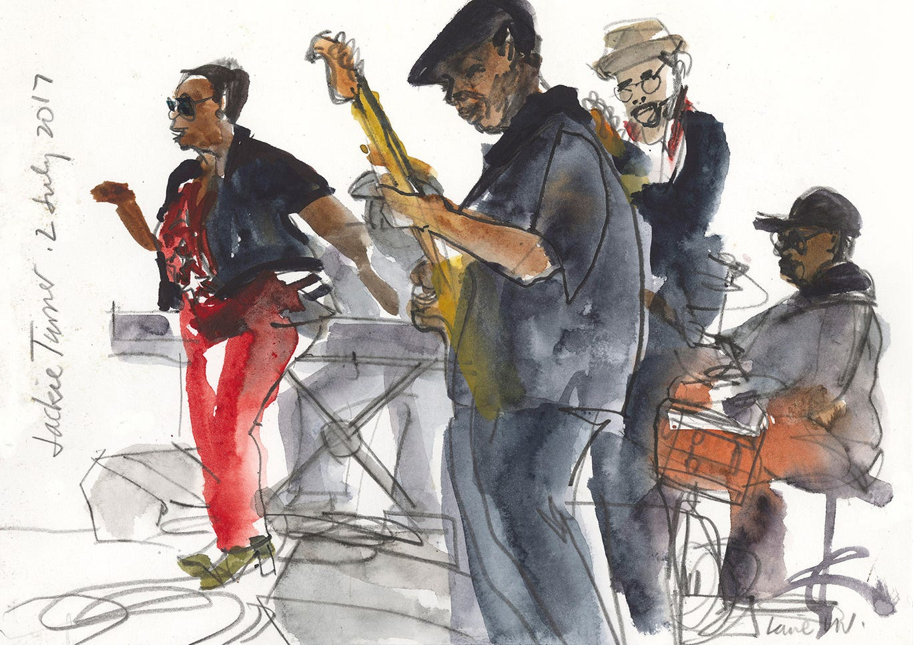

Musiken i Tinas liv
Musik har alltid varit en stor del av Tinas liv. Sedan ungefär ett år tillbaka sjunger hon i bandet Glöd på sin fritid.
Tina berättar att det var mycket musik i hemmet när hon var barn. De sjöng ofta tillsammans och båda hennes föräldrar spelade flera instrument. När Tina fyllde fem år fick hon en gitarr men lärde sig aldrig att spela på den då. Det var först senare, när hon och hennes klasskompisar fick en väldigt duktig musiklärare, som hon lyckades lära sig spela.
Efter gymnasiet arbetade Tina på olika restauranger. På fritiden gick hon ofta på konserter och lyssnade på musik. Hon spelade och sjöng inte så mycket själv då, men efter ett tag började hon längta efter det. En kväll efter arbetet satt hon hemma med sin mobil. Då hittade hon ett inlägg från några som ville starta ett band. Hon skrev till dem och två veckor senare startade de bandet Glöd.

Tina och bandet hyr ett rum i källaren i ett hyreshus. Där träffas de efter jobbet och spelar tillsammans. De bestämmer tillsammans vilka sånger de ska spela. Kvällarna med bandet blir ofta långa men Tina berättar att hon ändå är pigg och glad när hon går därifrån.
För en månad sedan hade bandet sin första spelning för publik. Lokalen var full med vänner, familj och grannar från huset. Efter två låtar blev det plötsligt svart i hela rummet och musiken tystnade. Det var ett problem med elen, men som tur var ordnade det sig snabbt och de kunde fortsätta spela.
Tina och bandet har stora planer för framtiden. De letar efter en pianist och någon som kan spela saxofon. Om man är fler när man spelar blir det roligare både för dem och för publiken.